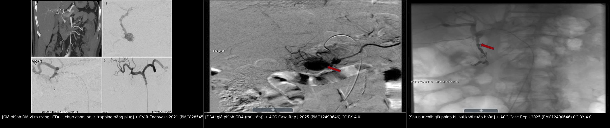
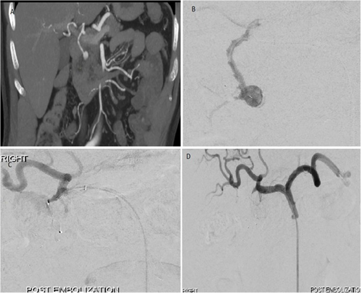
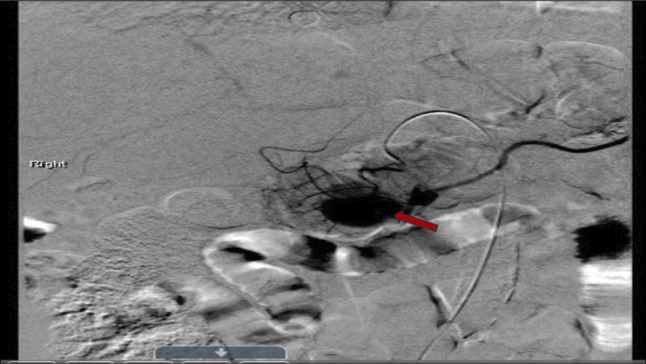
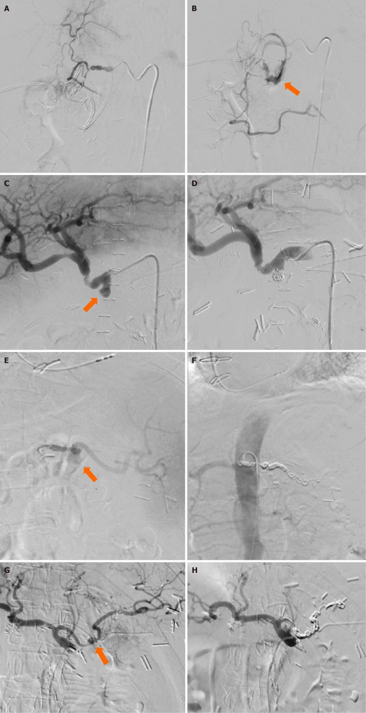

1819 — Chảy máu tiêu hóa MUỘN do giả phình động mạch tạng / Delayed GI bleeding from visceral artery pseudoaneurysm (GDA, pancreaticoduodenal)
Tags: pattern:chay-mau-tieu-hoa pattern:gia-phinh-mach pattern:xuat-huyet-tieu-hoa vung:ta-trang vung:tuy vung:o-bung-tren score:ISGPS-PPH protocol:CTA-2-thi protocol:DSA protocol:noi-soi-tieu-hoa
Mức chắc chắn (certainty): tổng hợp y văn (literature synthesis) — ghép tổng quan biến chứng mạch của viêm tụy (World J Clin Cases 2022, PMC9372863, CC BY-NC), loạt 46 giả phình động mạch tạng được nút mạch (CVIR Endovasc 2021, PMC8285451, CC BY 4.0), loạt 89 ca nút mạch (CVIR Endovasc 2024, PMC11400682, CC BY-NC-ND), 4 ca chảy máu muộn sau cắt tụy (World J Clin Cases 2024, PMC11438700, CC BY-NC) và tổng quan phình động mạch tạng (2026, PMC13554317, CC BY-NC-ND). Số nào nguồn không đưa thì ghi "chưa rõ".
Câu chốt: chảy máu tiêu hóa ở bệnh nhân viêm tụy hoặc vừa can thiệp gan–mật–tụy phải được coi là giả phình động mạch cho tới khi loại trừ. Giả phình xuất hiện ~3,5 tuần sau viêm tụy cấp, không ngừng phát triển theo kích thước — nguy cơ vỡ cao bất kể đường kính, nên không có ngưỡng "chờ xem". Nội soi âm tính không loại trừ (máu có thể chảy qua ống tụy hoặc ngắt quãng kiểu sentinel bleed); CTA có độ nhạy 95% và nút mạch là điều trị đầu tay (thành công kỹ thuật 100% trong loạt 46 ca).
1. Tổng quan bệnh học – cơ chế hình ảnh
1.1 Vì sao viêm tụy tạo ra "túi máu" không có thành thật
- Cơ chế: enzyme tiêu protein của tụy gây viêm động mạch hoại tử (necrotizing arteritis) quanh tụy → mất lớp áo giữa → máu đẩy thành túi giả được bao bởi mô xơ – cục máu – nang giả. Vì không có thành mạch thật, túi không có cơ trơn co bóp và không tự cầm máu được → dễ vỡ.
- Số liệu: ~1/4 bệnh nhân viêm tụy có biến chứng mạch máu; giả phình gặp 4–17% trong các loạt đơn trung tâm, xuất hiện ~3,5 tuần sau khởi phát viêm tụy cấp; động mạch lách 30–50%, sau đó động mạch vị trái, GDA, động mạch tụy–tá tràng (PMC9372863).
- Bốn đường chảy máu (quyết định triệu chứng): (1) vào ổ dịch/hoại tử quanh tụy → đau tăng, thiếu máu; (2) vào ống tụy → hemosuccus pancreaticus (máu ra bóng Vater, phân đen/đi cầu phân đen, nội soi dạ dày có thể bình thường); (3) vào đường mật → hemobilia (tam chứng Quincke: đau hạ sườn phải – vàng da – xuất huyết tiêu hóa); (4) xói mòn vào tá tràng/dạ dày → nôn máu/đi cầu phân đen ồ ạt.
- TẠI SAO muộn và "hai thì": túi giả lớn dần theo thời gian rồi rò một lượng nhỏ (sentinel bleed) — máu đọng trong lòng ruột/ổ dịch rồi tự cầm; sau vài giờ đến vài ngày, túi vỡ tự do gây sốc mất máu. Sentinel bleed là dấu hiệu báo trước, không phải "đã ổn".
1.2 Vì sao CTA/DSA thấy được (vật lý + huyết động)
- Giả phình = túi thông với lòng mạch: bơm cản quang thì động mạch → túi đầy đồng thời và cùng đậm độ với động mạch chủ; thì tĩnh mạch → rửa trôi song song với động mạch, không đọng lại như khối u. Đây là chốt phân biệt giả phình với nang giả tăng ngấm (pseudocyst/enhancing collection) và với phình thật (thành đều, có canxi).
- Chảy máu hoạt động (active extravasation): ổ cản quang tăng dần kích thước/đậm độ ở thì muộn — khác túi giả phình đầy rồi xả.
- Vì sao CTA nhạy 95% (PMC9372863) mà vẫn có ca âm: túi nhỏ (< 5 mm), huyết khối lấp đầy, hoặc chụp không đúng thì động mạch mỏng. Vì vậy CTA âm + nghi cao → DSA, không dừng lại.
- PHÂN LOẠI PANG (dùng để chọn cách nút): type 1 — động mạch nhỏ, > 5 mm cách động mạch lớn, không thông ống tiêu hóa, không lộ dịch tụy; type 2 — động mạch lớn có thể hy sinh, có thông ống tiêu hóa/lộ dịch tụy; type 3 — động mạch lớn không thể hy sinh → cần stent-graft thay vì nút (PMC9372863).
1.3 Ngưỡng định lượng nằm lòng
| Đại lượng | Ngưỡng / số liệu | Nguồn |
|---|---|---|
| Biến chứng mạch của viêm tụy | ~25% bệnh nhân | PMC9372863 |
| Tỉ lệ giả phình trong viêm tụy | 4–17%; xuất hiện ~3,5 tuần | PMC9372863 |
| Vị trí | lách 30–50%; vị trái, GDA, tụy–tá tràng | PMC9372863 |
| Độ nhạy CTA | 95% | PMC9372863 |
| Nút mạch giả phình tạng | thành công lâm sàng 70–90% | PMC9372863 |
| Loạt 46 giả phình tạng | kỹ thuật 100%, lâm sàng 93,48%, biến chứng 15,22%, tử vong 30 ngày 0%, nút lại 2,17%; coil 92,86% vs NBCA 93,75% | PMC8285451 |
| Loạt 89 ca nút mạch | lâm sàng 86,5%, biến chứng nhẹ 12,4%, tử vong 30 ngày 5,6%, chảy máu hoạt động trên CT 34,8% | PMC11400682 |
| Chảy máu sau cắt tụy (PPH) | 2–8%; sớm < 24 giờ** vs **muộn > 24 giờ; grade A/B/C | PMC11438700 |
| Nguy cơ vỡ giả phình | cao bất kể kích thước → can thiệp cấp | PMC13554317 |
2. Mẫu hình + chẩn đoán phân biệt theo vị trí (gamut)
2.1 GDA (động mạch vị–tá tràng) — vị trí "kinh điển" sau viêm tụy đầu tụy và sau mổ tụy
- Loét/xói mòn giả phình vào hành tá tràng → nôn máu, phân đen; nội soi thấy máu tươi trong tá tràng nhưng khó thấy ổ vì nguồn nằm ngoài lòng.
- Sau cắt tụy/Whipple: chảy máu muộn > 24 giờ qua dẫn lưu hoặc ống tiêu hóa = PPH muộn, nguyên nhân hàng đầu là giả phình GDA/động mạch gan tại chỗ rò tụy (PMC11438700).
- Sau TACE/TARE hoặc thủ thuật gan–mật: tổn thương catheter/guidewire hoặc viêm thành mạch do hóa chất → giả phình GDA/động mạch gan; có thể biểu hiện muộn bằng hemobilia hoặc xuất huyết tiêu hóa.
2.2 Động mạch tụy–tá tràng (IPDA/PDA) — bẫy "nội soi âm tính"
- Hemosuccus pancreaticus: máu từ bóng Vater, ngắt quãng, kèm đau bụng kiểu viêm tụy tái diễn; nội soi dạ dày – tá tràng thường âm nếu không nhìn bóng Vater đúng lúc đang chảy.
- Chẩn đoán bằng CTA thì động mạch mỏng 1 mm; nếu âm → DSA chọn lọc động mạch tạng.
2.3 Động mạch lách — chảy vào ống tụy hoặc dạ dày
- Giả phình trong nang giả/hoại tử đuôi tụy; vỡ vào dạ dày (qua thành sau) gây nôn máu; vỡ vào ống tụy gây hemosuccus.
- Bẫy: túi giả nằm trong ổ dịch nên dễ bị đọc là "nang giả tăng ngấm" nếu chỉ xem một thì.
2.4 Động mạch gan — hemobilia sau can thiệp
- Sau TACE/TARE, sinh thiết gan, PTBD, chấn thương; biểu hiện đau – vàng da – xuất huyết tiêu hóa; CTA/CT 3 thì; nút mạch hoặc stent-graft nếu cần giữ dòng gan.
3. Bảng so sánh phân biệt (ma trận đối chiếu)
| Thực thể (entity) | Hình ảnh điển hình | Chốt vào (rule-in) | Chốt loại (rule-out) | Gợi ý xác nhận |
|---|---|---|---|---|
| Giả phình GDA/tụy–tá tràng | Túi saccular quanh tụy/tá tràng, đầy thì động mạch, rửa cùng động mạch, bờ không đều | Túi + nhu mô tụy viêm/ổ dịch quanh + tiền sử viêm tụy/mổ/can thiệp | Không thấy túi trên CTA thì động mạch mỏng → không loại trừ, cần DSA | CTA 2–3 thì lát 1 mm → DSA + nút |
| Phình thật động mạch tạng | Thành đều, có canxi, hình thoi/đối xứng | Canxi thành + hình thái đều, không bối cảnh viêm | Bờ không đều + bối cảnh viêm cấp → giả phình | CTA; theo dõi kích thước |
| Nang giả tăng ngấm (pseudocyst) | Ngấm viền, đậm độ thấp hơn động mạch, không rửa đồng thì | Ngấm kiểu viền/mô hạt, không cùng đậm độ ĐMC | Đầy cùng đậm độ ĐMC ở thì động mạch → giả phình | So đậm độ với ĐMC ở 3 thì |
| Loét tiêu hóa chảy máu | Ổ loét + máu trong lòng; không túi mạch | Ổ loét thấy trên nội soi, không túi trên CTA | Nội soi âm + máu tái phát → nghĩ nguồn ngoài lòng (giả phình) | Nội soi + CTA; nếu âm → DSA |
| Giãn tĩnh mạch / Mallory–Weiss | Búi giãn hoặc rách niêm mạc; không túi động mạch | Bối cảnh tăng áp cửa, nôn nhiều | Có túi mạch → giả phình | Nội soi cấp cứu |
| U tụy/tá tràng chảy máu | Khối + hạch, ngấm không đồng thì với ĐMC | Khối đặc, hạch, ngấm kiểu u | Túi đầy thì động mạch → giả phình | Sinh thiết sau khi cầm máu |
| Hemobilia sau can thiệp gan | Máu trong đường mật, giả phình động mạch gan | Tam chứng Quincke + tiền sử PTBD/TACE/sinh thiết | Không máu đường mật → nguồn khác | CT 3 thì, DSA |

Trái: CTA coronal (A) túi giả phình GDA trong máu tụ, DSA chọn lọc (B), và trapping bằng plug (C, D). Giữa/phải: DSA trước và sau nút coil cùng ca. Nguồn: CVIR Endovasc 2021 (PMC8285451) CC BY 4.0; ACG Case Rep J 2025 (PMC12490646) CC BY 4.0. Ảnh ghép letterbox, không crop.Dấu hiệu hình ảnh chốt (đọc nhanh)
- "Hai dấu chấm" cạnh ổ dịch tụy: một chấm là lòng mạch, chấm kia là túi giả nối bằng cổ hẹp — cổ hẹp giải thích không tự cầm máu.
- Đậm độ: so trực tiếp với động mạch chủ ở cùng một thì; giả phình bằng, nang giả thấp hơn.
- Theo dõi: túi to lên nhanh giữa 2 lần chụp (vài mm/ngày) = nguy cơ vỡ tức thì, can thiệp ngay.
4. Protocol chụp/can thiệp + hệ phân độ
4.1 Chẩn đoán: CTA trước, DSA để điều trị
- CTA bụng 2–3 thì (không cản quang – động mạch – tĩnh mạch cửa), lát 0,5–1 mm, dựng MIP/coronal dọc trục thân tạng – GDA – nhánh tụy–tá tràng. Ghi vị trí, đường kính túi, cổ túi, mạch cho – mạch nhận, có chảy máu hoạt động hay không.
- DSA chọn lọc thân tạng, động mạch gan, GDA, động mạch mạc treo tràng trên (nhánh tụy–tá tràng dưới) — điều trị ngay trong cùng phiên nếu thấy túi.
- Nội soi tiêu hóa trên trước/song song để loại trừ ổ loét và tìm máu ở bóng Vater (hemosuccus) — nhưng không được trì hoãn CTA vì nội soi âm.
4.2 Phân độ & quyết định (theo ISGPS cho bối cảnh sau mổ tụy)
| Grade | Định nghĩa | Hành động |
|---|---|---|
| A | Chảy máu nhỏ, không ảnh hưởng diễn tiến hậu phẫu | Theo dõi sát, CTA ngay khi có sentinel bleed |
| B | Cần truyền máu/nội soi/can thiệp, không sốc | CTA → nút mạch |
| C | Đe dọa tính mạng, cần xử trí tức thì, thường vào ICU | Nút mạch khẩn ± mổ |
- Sentinel bleed (máu nhỏ qua dẫn lưu hoặc ống tiêu hóa, không triệu chứng) là dấu hiệu cảnh báo vỡ túi giả phình — nghĩa là CTA ngay, không chờ sốc (PMC11438700).
4.3 Kỹ thuật nút mạch
- Trapping: đặt coil/vật liệu phía xa túi trước, phía gần sau để chặn dòng ngược từ tuần hoàn bàng hệ — kỹ thuật hay dùng cho GDA (PMC9372863, PMC8285451).
- Sac packing: nhồi đầy túi bằng coil/NBCA–Lipiodol khi cổ rộng hoặc không thể trapping.
- Stent-graft (covered stent): khi không thể hy sinh mạch (type 3 Pang — động mạch gan, mạc treo tràng trên).
- Chất liệu: coil (nhóm 28 ca: lâm sàng 92,86%) hoặc NBCA glue (16 ca: 93,75%) — khác biệt không rõ (PMC8285451).
- Thất bại/lâm sàng xấu đi → mổ (thắt mạch, cắt tụy/tá tràng) — chỉ định khi không can thiệp được hoặc huyết động không ổn định.
flowchart TD
A[Chảy máu tiêu hóa muộn sau viêm tụy / mổ tụy / can thiệp gan mật] --> B[Sentinel bleed hoặc phân đen, Hb giảm]
B --> C[CTA bụng 2-3 thì, lát 1 mm]
C --> D{Thấy túi giả phình / thoát mạch?}
D -->|Có| E[DSA chọn lọc + nút mạch cùng phiên]
D -->|Không, nhưng nghi cao| F[DSA chọn lọc thân tạng - GDA - ĐM mạc treo]
E --> G{Thành công?}
G -->|Có| H[Theo dõi 24-48 giờ; CTA lại nếu tái chảy]
G -->|Không / không ổn định| I[Mổ: thắt mạch / cắt tụy]
F -->|Thấy tổn thương| E
F -->|Không thấy| J[Nội soi lại tìm bóng Vater, xét nghiệm, theo dõi ICU]
5. Biến thể bình thường và cạm bẫy
- Nội soi âm tính không loại trừ: nguồn có thể ở ống tụy (hemosuccus) hoặc ngoài lòng; máu ngắt quãng.
- Chỉ chụp một thì: giả phình nhỏ có thể biến mất ở thì tĩnh mạch; bắt buộc thì động mạch mỏng.
- Đọc nang giả thành giả phình: so đậm độ với động mạch chủ cùng thì là cách chốt.
- Chờ đợi vì "túi nhỏ": giả phình vỡ bất kể kích thước — không có ngưỡng theo dõi (PMC13554317).
- Bỏ sót nguồn thứ hai: viêm tụy có thể có nhiều túi; DSA phải khảo sát cả thân tạng và mạc treo tràng trên.
- Coil lộ ra ngoài lòng (exposed coil): vật liệu nút có thể di trú/xuyên vào ổ hoại tử hoặc lòng tá tràng; theo dõi bằng CT và nội soi khi có triệu chứng mới.
- Bối cảnh TACE/TARE: chảy máu có thể do loét xạ (bài 1818) hoặc giả phình — hai cơ chế cùng tồn tại, đừng dừng ở một chẩn đoán.
- Nhiễm khuẩn: giả phình mycotic sau nhiễm khuẩn huyết/viêm tụy nhiễm trùng — cần kháng sinh dài phối hợp, không chỉ nút mạch.
6. Tự lượng giá — Blind Quiz
Ca 1 — Nam 55 tuổi, viêm tụy cấp 4 tuần trước, đau thượng vị tăng, Hb tụt 2 g/dL.

- Hỏi: mô tả tổn thương trên CTA (A) và cách xử trí ở (B–D)? Vì sao phải chặn cả hai đầu?
Bấm để hiện đáp án (findings + chẩn đoán)
- Findings: (A) CTA coronal — túi giả phình GDA nằm trong máu tụ/ổ dịch quanh tụy; (B) DSA chọn lọc xác nhận; (C, D) trapping bằng plug phía xa và phía gần → túi bị loại khỏi tuần hoàn.
- Chẩn đoán: giả phình GDA sau viêm tụy — nguy cơ vỡ cao, cần can thiệp dù chưa sốc.
- Vì sao hai đầu: GDA có tuần hoàn bàng hệ (nhánh tá tụy, vị tá) → nút một đầu dễ tái thông ngược dòng.
- Nguồn ảnh: CVIR Endovasc 2021 (PMC8285451), Fig. 1 — CC BY 4.0.
Ca 2 — Nữ 60 tuổi, viêm tụy hoại tử, phân đen tái diễn 2 đợt, nội soi dạ dày không thấy ổ loét.

- Hỏi: vì sao nội soi âm? Dấu hiệu trên DSA là gì? Bước tiếp theo?
Bấm để hiện đáp án (findings + chẩn đoán)
- Findings: DSA động mạch vị–tá tràng — túi giả phình (mũi tên đỏ) đổ đầy ở thì động mạch.
- Chẩn đoán: giả phình GDA; nội soi âm vì máu chảy qua ống tụy/ngắt quãng (kiểu hemosuccus) hoặc nguồn ngoài lòng.
- Bước tiếp: nút coil (ảnh dưới) — kiểm tra loại trừ túi khỏi tuần hoàn.
- Nguồn ảnh: ACG Case Rep J 2025 (PMC12490646), Fig. 3 — CC BY 4.0.
Ca 3 — Sau cắt tụy, ngày 8: máu ít qua dẫn lưu, bệnh nhân tỉnh, HA bình thường.

- Hỏi: "máu ít" có được theo dõi? Hình DSA cho thấy gì?
Bấm để hiện đáp án (findings + chẩn đoán)
- Findings: DSA — thoát mạch cản quang từ động mạch vị–tá tràng (mũi tên); sau can thiệp, không còn thoát mạch.
- Chẩn đoán: PPH muộn + sentinel bleed do giả phình — không được chờ; CTA/DSA và nút mạch ngay.
- Bài học: chảy máu nhỏ tự cầm vẫn là điềm báo vỡ; tử vong của PPH liên quan chậm trễ, không phải lượng máu lúc đầu.
- Nguồn ảnh: World J Clin Cases 2024 (PMC11438700), Fig. 2 — CC BY-NC 4.0.
Bài liên quan chéo
- 920 – Nút mạch cầm máu tiêu hóa
- 135 – Viêm tụy cấp (Atlanta)
- 930 – TACE/RFA/đốt u gan
- 1811 – Loét & hẹp thực quản–dạ dày–tá tràng do vi cầu lạc vị sau TACE/TARE
Ảnh & giấy phép
1819_gia-phinh-mach-tang_CTA-DSA_PMC8285451-f1.jpg— CVIR Endovasc 2021 (PMC8285451), CC BY 4.0.1819_gia-phinh-mach-tang_DSA_PMC12490646-f3.jpg,..._DSA-sau-nut_PMC12490646-f4.jpg— ACG Case Rep J 2025 (PMC12490646), CC BY 4.0.1819_gia-phinh-mach-tang_DSA_PMC11438700-f2.jpg— World J Clin Cases 2024 (PMC11438700), CC BY-NC 4.0.composite_gia-phinh-gda.jpg— ghép bằngtools/make_composite.py, CC BY 4.0 (chỉ gồm ảnh CC BY).- Chi tiết từng file:
images/CREDITS.md.
Không dùng để chẩn đoán độc lập khi chưa có người hướng dẫn.